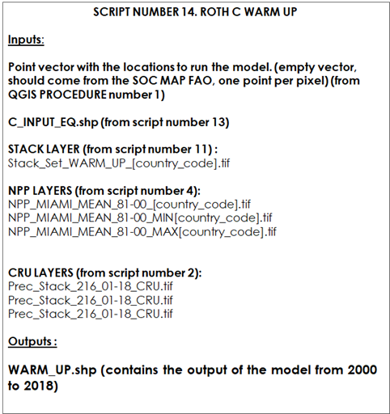

Chapter 10 | Stage 2: running the model
Once all input layers are prepared, harmonized and stacked, we will run the three modeling phases. At this stage, we will run the model three times, once for each phase, so we will need three different scripts (scripts 13, 14 and 15), which use the same RothC function. For each script we will need the created raster stacks (in the case of the warm up phase we will also include the climate stacks), and the created target points. Each script will generate output vector points (containing the modeling results, i.e. SOC stocks of the different carbon pools of the RothC model). The output vector of each phase will be used as an input of the next modeling phase. Finally, after running the ‘forward’ phase, we will obtain an output vector file containing the SOC data for each projected scenario. This output vector will be used in the final script to generate the raster files to build the sequestration potential maps.
In each phase and script we will use the same RothC function. The RothC function is the core of the next three scripts and will be used to simulate the different C pools over the defined time periods. In the following a brief overview of the commands we will be running to perform the RothC calculations.
# ROTH C MODEL FUNCTION .
########## function set up starts###############
Roth_C<-function(Cinputs,years,DPMptf, RPMptf, BIOptf, HUMptf, FallIOM,Temp,Precip,Evp,Cov,Cov1,Cov2,soil.thick,SOC,clay,DR,bare1){This function will calculate first the “Temperature factor per month” using a function from the SOILR package called “fT.RothC” :
Then the function will calculate the “Moisture factor per month” (this function was modified from the original SOILR moisture function, to include the soil cover effect, as in the original RothC model (See Chapter 4):
#Moisture effects per month .
fw1func<-function(P, E, S.Thick = 30, pClay = 32.0213, pE = 1, bare)
{
M = P - E * pE
Acc.TSMD = NULL
for (i in 2:length(M)) {
B = ifelse(bare[i] == FALSE, 1, 1.8)
Max.TSMD = -(20 + 1.3 * pClay - 0.01 * (pClay^2)) * (S.Thick/23) * (1/B)
Acc.TSMD[1] = ifelse(M[1] > 0, 0, M[1])
if (Acc.TSMD[i - 1] + M[i] < 0) {
Acc.TSMD[i] = Acc.TSMD[i - 1] + M[i]
}
else (Acc.TSMD[i] = 0)
if (Acc.TSMD[i] <= Max.TSMD) {
Acc.TSMD[i] = Max.TSMD
}
}
b = ifelse(Acc.TSMD > 0.444 * Max.TSMD, 1, (0.2 + 0.8 * ((Max.TSMD -
Acc.TSMD)/(Max.TSMD - 0.444 * Max.TSMD))))
b<-clamp(b,lower=0.2)
return(data.frame(Acc.TSMD, b, Max.TSMD))
}
fW_2<- fw1func(P=(Precip[,2]), E=(Evp[,2]), S.Thick = soil.thick, pClay = clay, pE = 1, bare=bare1)$b Then the function will calculate the “vegetation cover factor” effect:
In each script, we will need to set the factor frame to run the model (500 years for spin up, 18/20 years for the warm-up, 20 years for the forward), and run the model. We will have two options: one from the SoilR package (using “lsoda” function to solve the differential equations) and one from the soilassessment package that allows to change the differential equation solver, by default we will use the “euler” method, which is faster.
# Set the factors frame for Model calculations
xi.frame=data.frame(years,rep(fT*fW_2*fC*fPR,length.out=length(years)))
# RUN THE MODEL from soilassessment
#Roth C soilassesment
Model3_spin=carbonTurnover(tt=years,C0=c(DPMptf, RPMptf, BIOptf, HUMptf, FallIOM),In=Cinputs,Dr=DR,clay=clay,effcts=xi.frame, "euler")
Ct3_spin=Model3_spin[,2:6]
# RUN THE MODEL FROM SOILR
#Model3_spin=RothCModel(t=years,C0=c(DPMptf, RPMptf, BIOptf, HUMptf, FallIOM),In=Cinputs,DR=DR,clay=clay,xi=xi.frame, pass=TRUE)
#Ct3_spin=getC(Model3_spin)
# Get the final pools of the time series
poolSize3_spin=as.numeric(tail(Ct3_spin,1))
return(poolSize3_spin)
}
########## function set up ends###############10.1 Script Number 13. “ROTH_C_SPIN_UP_v2.R”
Script number 13 implements the first modeling phase (long spin up phase). In this script we will load the stack generated in script number 10 and the target points (Section 9.7, QGIS model number 1). We will obtain an output vector containing our target points. This script runs the RothC model for 500 years to calculate the equilibrium carbon inputs (the carbon inputs needed to reach the 2001 SOC stocks) and the SOC stocks for the different pools. It first runs using a standard C input of 1 tC ha-1 yr-1, and then equilibrium inputs are estimated from the obtained results and GSOCmap stocks (See Chapters 5 and 6). In this script we will use pedotransfer functions to estimate the SOC stocks of the different pools from the total SOC stock (Weiherm&uuller et al., 2013) to accelerate the spin up process. All that information will be saved to the output vector (shapefile file). Table 10.1 Script Number 13. Spin Up phase. Inputs and Outputs.
The SPIN UP Phase will allow us to calculate two outputs that will be saved to a point vector layer called “C_INPUT_EQ.shp”: equilibrium carbon inputs (Ceq) and the carbon stocks of the different soil C pools to run the second phase (WARM UP phase). First, the following packages are loaded into R:
Then we will set the working directory.
Then, we need to load the target points created in the “qgis procedure number 1”.
# Vector must be an empty points vector.
setwd(WD_FOLDER)
Vector<-readOGR("INPUTS/TARGET_POINTS/Target_Points_sub.shp")Then we need to open the stack with all the spin-up variables to run the model (from script number 7).
# Stack_Set_1 is a stack that contains the spatial variables
Stack_Set_1<- stack("INPUTS/STACK/Stack_Set_SPIN_UP_AOI.tif")We will run the next lines of the code and create an empty vector variable to save the outputs results of the model and the pedotransfer functions:
Now, we need to extract the input variables from the raster stack to the target points (now called “Vector”). This step will allow us to continue working with a “dataframe” instead of a raster stack layer.
The next lines will define the different variables from the Vector_variables pool. We need to individualize them in separate variables. The last line of this block will set the number of years to run the RothC function.
# Extract the layers from the Vector
SOC_im<-Vector_variables[[2]] # first band of the stack is the second column of the vector
clay_im<-Vector_variables[[3]]
DR_im<-Vector_variables[[40]]
LU_im<-Vector_variables[[41]]
# Define Years for Cinputs calculations
years=seq(1/12,500,by=1/12)Once we have defined the variables and time frame, we can start using the the RothC function.
# ROTH C MODEL FUNCTION .
########## function set up starts###############
Roth_C<-function(Cinputs,years,DPMptf, RPMptf, BIOptf, HUMptf, FallIOM,Temp,Precip,Evp,Cov,Cov1,Cov2,soil.thick,SOC,clay,DR,bare1,LU)
{
# Paddy fields coefficent fPR = 0.4 if the target point is class = 13 , else fPR=1
# From Shirato and Yukozawa 2004
fPR=(LU == 13)*0.4 + (LU!=13)*1
#Temperature effects per month
fT=fT.RothC(Temp[,2])
#Moisture effects per month .
fw1func<-function(P, E, S.Thick = 30, pClay = 32.0213, pE = 1, bare)
{
M = P - E * pE
Acc.TSMD = NULL
for (i in 2:length(M)) {
B = ifelse(bare[i] == FALSE, 1, 1.8)
Max.TSMD = -(20 + 1.3 * pClay - 0.01 * (pClay^2)) * (S.Thick/23) * (1/B)
Acc.TSMD[1] = ifelse(M[1] > 0, 0, M[1])
if (Acc.TSMD[i - 1] + M[i] < 0) {
Acc.TSMD[i] = Acc.TSMD[i - 1] + M[i]
}
else (Acc.TSMD[i] = 0)
if (Acc.TSMD[i] <= Max.TSMD) {
Acc.TSMD[i] = Max.TSMD
}
}
b = ifelse(Acc.TSMD > 0.444 * Max.TSMD, 1, (0.2 + 0.8 * ((Max.TSMD -
Acc.TSMD)/(Max.TSMD - 0.444 * Max.TSMD))))
b<-clamp(b,lower=0.2)
return(data.frame(b))
}
fW_2<- fw1func(P=(Precip[,2]), E=(Evp[,2]), S.Thick = soil.thick, pClay = clay, pE = 1, bare=bare1)$b
#Vegetation Cover effects
fC<-Cov2[,2]
# Set the factors frame for Model calculations
xi.frame=data.frame(years,rep(fT*fW_2*fC*fPR,length.out=length(years)))
# RUN THE MODEL from soilassessment
#Roth C soilassesment
Model3_spin=carbonTurnover(tt=years,C0=c(DPMptf, RPMptf, BIOptf, HUMptf, FallIOM),In=Cinputs,Dr=DR,clay=clay,effcts=xi.frame, "euler")
Ct3_spin=Model3_spin[,2:6]
# RUN THE MODEL FROM SOILR
#Model3_spin=RothCModel(t=years,C0=c(DPMptf, RPMptf, BIOptf, HUMptf, FallIOM),In=Cinputs,DR=DR,clay=clay,xi=xi.frame, pass=TRUE)
#Ct3_spin=getC(Model3_spin)
# Get the final pools of the time series
poolSize3_spin=as.numeric(tail(Ct3_spin,1))
return(poolSize3_spin)
}
########## function set up ends###############After setting the RothC function we will iterate it over each one of the target points.
For each target point we extract the climate variables and the monthly vegetation cover values. Each variable will be assigned to an R variable.
# Iterates over the area of interest
########for loop starts###############
for (i in 1:dim(Vector_variables)[1]) {
# Extract the variables
Vect<-as.data.frame(Vector_variables[i,])
Temp<-as.data.frame(t(Vect[4:15]))
Temp<-data.frame(Month=1:12, Temp=Temp[,1])
Precip<-as.data.frame(t(Vect[16:27]))
Precip<-data.frame(Month=1:12, Precip=Precip[,1])
Evp<-as.data.frame(t(Vect[28:39]))
Evp<-data.frame(Month=1:12, Evp=Evp[,1])
Cov<-as.data.frame(t(Vect[42:53]))
Cov1<-data.frame(Cov=Cov[,1])
Cov2<-data.frame(Month=1:12, Cov=Cov[,1])The next line will avoid running the model over points with unreliable data, that may contain missing values or unrealistic values.
#Avoid calculus over Na values
if (any(is.na(Evp[,2])) | any(is.na(Temp[,2])) | any(is.na(SOC_im[i])) | any(is.na(clay_im[i])) | any(is.na(Precip[,2])) | any(is.na(Cov2[,2])) | any(is.na(Cov1[,1])) | any(is.na(DR_im[i])) | (SOC_im[i]<0) | (clay_im[i]<0) ) {C_INPUT_EQ[i,2]<-0}else{Now we will set the value of each variable (SOC, Clay, DR, and Land Use) needed to run the model. The bare1 variable is used to derive the moisture factor.
# Set the variables from the images
soil.thick=30 #Soil thickness (organic layer topsoil), in cm
SOC<-SOC_im[i] #Soil organic carbon in Mg/ha
clay<-clay_im[i] #Percent clay %
DR<-DR_im[i] # DPM/RPM (decomplosable vs resistant plant material.)
bare1<-(Cov1>0.8) # If the surface is bare or vegetated
LU<-LU_im[i]The next line will calculate the IOM fraction of the SOC, from the SOC value:
Now there are two options to calculate the uncertainties. One is to use your own SOC uncertainty layer: by loading it into R with the following lines of code:
# If you use a SOC uncertainty layer turn on this. First open the layer SOC_UNC
#(it must have the same extent and resolution of the SOC layer)
#SOC_min<-(1-(SOC_UNC/100))*SOC
#SOC_max<-(1+(SOC_UNC/100))*SOC
# Define SOC min, max Clay min and max.
SOC_min<-SOC*0.8
SOC_max<-SOC*1.2
clay_min<-clay*0.9
clay_max<-clay*1.1The script then uses the RothC function with the parameters listed below. We want to estimate the annual Carbon inputs needed to reach the actual GSOCmap value (equilibrium C inputs). We will first run the model assuming “Cinputs” equal 1. We can assume that SOC stock values when there are no C inputs (“Cinputs” equal to 0) will be equal to the inert organic carbon stocks (SOC=FallIOM). We can then build a simple linear model to estimate the “Cinputs” value needed to reach SOC FAO actual value (equilibrium C inputs, See modeling approach, Chapter 5 and 6). b<-1
# C input equilibrium. (Ceq)
fb<-Roth_C(Cinputs=b,years=years,DPMptf=0, RPMptf=0, BIOptf=0, HUMptf=0, FallIOM=FallIOM,Temp=Temp,Precip=Precip,Evp=Evp,Cov=Cov,Cov1=Cov1,Cov2=Cov2,soil.thick=soil.thick,SOC=SOC,clay=clay,DR=DR,bare1=bare1)
fb_t<-fb[1]+fb[2]+fb[3]+fb[4]+fb[5]
m<-(fb_t-FallIOM)/(b)
Ceq<-(SOC-FallIOM)/mWe will repeat the “C input eq. code” to calculate minimum and maximum carbon inputs at equilibrium, using the combination of environmental variables listed in chapter 12 (Uncertainties).
# UNCERTAINTIES C input equilibrium (MINIMUM)
FallIOM_min=0.049*SOC_min^(1.139)
fb_min<-Roth_C(Cinputs=b,years=years,DPMptf=0, RPMptf=0, BIOptf=0, HUMptf=0, FallIOM=FallIOM,Temp=Temp*1.02,Precip=Precip*0.95,Evp=Evp,Cov=Cov,Cov1=Cov1,Cov2=Cov2,soil.thick=soil.thick,SOC=SOC_min,clay=clay_min,DR=DR,bare1=bare1)
fb_t_MIN<-fb_min[1]+fb_min[2]+fb_min[3]+fb_min[4]+fb_min[5]
m<-(fb_t_MIN-FallIOM_min)/(b)
Ceq_MIN<-(SOC_min-FallIOM_min)/m
# UNCERTAINTIES C input equilibrium (MAXIMUM)
FallIOM_max=0.049*SOC_max^(1.139)
fb_max<-Roth_C(Cinputs=b,years=years,DPMptf=0, RPMptf=0, BIOptf=0, HUMptf=0, FallIOM=FallIOM,Temp=Temp*0.98,Precip=Precip*1.05,Evp=Evp,Cov=Cov,Cov1=Cov1,Cov2=Cov2,soil.thick=soil.thick,SOC=SOC_max,clay=clay_max,DR=DR,bare1=bare1)
fb_t_MAX<-fb_max[1]+fb_max[2]+fb_max[3]+fb_max[4]+fb_max[5]
m<-(fb_t_MAX-FallIOM_max)/(b)
Ceq_MAX<-(SOC_max-FallIOM_max)/m Now for each land use, we will run the “pedotransfer functions” (Weiherm&uuller et al., 2013) to estimate the values of the SOC pools. Here is the example for the croplands land use. Then the same code will be executed for the rest of the land use classes.
# SOC POOLS AFTER 500 YEARS RUN WITH C INPUT EQUILIBRIUM
if (LU==2){
RPM_p_2<-((0.184*SOC + 0.1555)*(clay + 1.275)^(-0.1158))*0.9902+0.4788
BIO_p_2<-((0.014*SOC + 0.0075)*(clay + 8.8473)^(0.0567))*1.09038+0.04055
HUM_p_2<-((0.7148*SOC + 0.5069)*(clay + 0.3421)^(0.0184))*0.9878-0.3818
DPM_p_2<-SOC-FallIOM-RPM_p_2-HUM_p_2-BIO_p_2
feq_t<-RPM_p_2+BIO_p_2+HUM_p_2+DPM_p_2+FallIOM
#uncertainties MIN
RPM_p_2_min<-((0.184*SOC_min + 0.1555)*(clay_min + 1.275)^(-0.1158))*0.9902+0.4788
BIO_p_2_min<-((0.014*SOC_min + 0.0075)*(clay_min + 8.8473)^(0.0567))*1.09038+0.04055
HUM_p_2_min<-((0.7148*SOC_min + 0.5069)*(clay_min + 0.3421)^(0.0184))*0.9878-0.3818
DPM_p_2_min<-SOC_min-FallIOM_min-RPM_p_2_min-HUM_p_2_min-BIO_p_2_min
feq_t_min<-RPM_p_2_min+BIO_p_2_min+HUM_p_2_min+DPM_p_2_min+FallIOM_min
#uncertainties MAX
RPM_p_2_max<-((0.184*SOC_max + 0.1555)*(clay_max + 1.275)^(-0.1158))*0.9902+0.4788
BIO_p_2_max<-((0.014*SOC_max + 0.0075)*(clay_max + 8.8473)^(0.0567))*1.09038+0.04055
HUM_p_2_max<-((0.7148*SOC_max + 0.5069)*(clay_max + 0.3421)^(0.0184))*0.9878-0.3818
DPM_p_2_max<-SOC_max-FallIOM_max-RPM_p_2_max-HUM_p_2_max-BIO_p_2_max
feq_t_max<-RPM_p_2_max+BIO_p_2_max+HUM_p_2_max+DPM_p_2_max+FallIOM_maxFinally, we will save the outputs pools to the variables C_INPUT_EQ :
C_INPUT_EQ[i,2]<-SOC
C_INPUT_EQ[i,3]<-Ceq
C_INPUT_EQ[i,4]<-feq_t
C_INPUT_EQ[i,5]<-DPM_p_2
C_INPUT_EQ[i,6]<-RPM_p_2
C_INPUT_EQ[i,7]<-BIO_p_2
C_INPUT_EQ[i,8]<-HUM_p_2
C_INPUT_EQ[i,9]<-FallIOM
C_INPUT_EQ[i,10]<-Ceq_MIN
C_INPUT_EQ[i,11]<-Ceq_MAX
C_INPUT_EQ[i,12]<-feq_t_min
C_INPUT_EQ[i,13]<-DPM_p_2_min
C_INPUT_EQ[i,14]<-RPM_p_2_min
C_INPUT_EQ[i,15]<-BIO_p_2_min
C_INPUT_EQ[i,16]<-HUM_p_2_min
C_INPUT_EQ[i,17]<-FallIOM_min
C_INPUT_EQ[i,18]<-feq_t_max
C_INPUT_EQ[i,19]<-DPM_p_2_max
C_INPUT_EQ[i,20]<-RPM_p_2_max
C_INPUT_EQ[i,21]<-BIO_p_2_max
C_INPUT_EQ[i,22]<-HUM_p_2_max
C_INPUT_EQ[i,23]<-FallIOM_maxIn order to properly save the output vector, we will change the names of the fields:
#rename de columns
colnames(C_INPUT_EQ@data)[2]="SOC_FAO"
colnames(C_INPUT_EQ@data)[3]="Cinput_EQ"
colnames(C_INPUT_EQ@data)[4]="SOC_pedotransfer"
colnames(C_INPUT_EQ@data)[5]="DPM_pedotransfer"
colnames(C_INPUT_EQ@data)[6]="RPM_pedotransfer"
colnames(C_INPUT_EQ@data)[7]="BIO_pedotransfer"
colnames(C_INPUT_EQ@data)[8]="HUM_pedotransfer"
colnames(C_INPUT_EQ@data)[9]="IOM_pedotransfer"
colnames(C_INPUT_EQ@data)[10]="CIneq_min"
colnames(C_INPUT_EQ@data)[11]="CIneq_max"
colnames(C_INPUT_EQ@data)[12]="SOC_min"
colnames(C_INPUT_EQ@data)[13]="DPM_min"
colnames(C_INPUT_EQ@data)[14]="RPM_min"
colnames(C_INPUT_EQ@data)[15]="BIO_min"
colnames(C_INPUT_EQ@data)[16]="HUM_min"
colnames(C_INPUT_EQ@data)[17]="IOM_min"
colnames(C_INPUT_EQ@data)[18]="SOC_max"
colnames(C_INPUT_EQ@data)[19]="DPM_max"
colnames(C_INPUT_EQ@data)[20]="RPM_max"
colnames(C_INPUT_EQ@data)[21]="BIO_max"
colnames(C_INPUT_EQ@data)[22]="HUM_max"
colnames(C_INPUT_EQ@data)[23]="IOM_max"Finally, we will set the output directory and save the output vector:
10.2 Script Number 14. “ROTH_C_WARM_UP_v4.R”
Script number 14 implements the second modeling phase (“Warm up” phase). In this script we will load the stack of different layers generated in script number 11 and the target points. We also will load the output vector of the phase 1 (spin up), the climate layers from script number 2, the NPP layer from script number 5, and the land use layer stack from script number 9. This script runs the Roth C model for 18 years (2000-2018) with the possibility to be modified to 20 years if data is available (2000-2020). The final outputs are SOC stocks of the five C pools of the RothC model (DPM, RPM, BIO, HUM and IOM), and the total SOC stock. This information will be saved to a shapefile vector.
Table 10.2 Script Number 14. Warm Up phase. Inputs and Outputs

This script runs the spatial RothC model for the warm-up period (from 2001 to 2018). We will provide the script the target points (empty vector layer from Qgis procedure number 1), the Stack layer (from script number 11), the three NPP layers (from script number 5) and the three climate layers generated in script number 2. The output vector layer from script number 13 (Spin up phase) will also be needed.
rm(list=ls())
library(SoilR)
library(raster)
library(rgdal)
library(soilassessment)
working_dir<-setwd("C:/TRAINING_MATERIALS_GSOCseq_MAPS_28-09-2020")
#Open empty vector
Vector<-readOGR("INPUTS/TARGET_POINTS/target_points_sub.shp")
#Open Warm Up Stack
Stack_Set_warmup<- stack("INPUTS/STACK/Stack_Set_WARM_UP_AOI.tif")
# Open Result from SPIN UP PROCESS. A vector with 5 columns , one for each pool
Spin_up<-readOGR("OUTPUTS/1_SPIN_UP/SPIN_UP_County_AOI.shp")
Spin_up<-as.data.frame(Spin_up)
# Open Precipitation , temperature, and EVapotranspiration file 20 anios x 12 = 240 layers x 3
PREC<-stack("INPUTS/CRU_LAYERS/Prec_Stack_216_01-18_CRU.tif")
TEMP<-stack("INPUTS/CRU_LAYERS/Temp_Stack_216_01-18_CRU.tif")
PET<-stack("INPUTS/CRU_LAYERS/PET_Stack_216_01-18_CRU.tif")
#Open Mean NPP MIAMI 1981 - 2000
NPP<-raster("INPUTS/NPP/NPP_MIAMI_MEAN_81-00_AOI.tif")
NPP_MEAN_MIN<-raster("INPUTS/NPP/NPP_MIAMI_MEAN_81-00_AOI_MIN.tif")
NPP_MEAN_MAX<-raster("INPUTS/NPP/NPP_MIAMI_MEAN_81-00_AOI_MAX.tif")
#Open LU layer (year 2000).
LU_AOI<-raster("INPUTS/LAND_USE/ESA_Land_Cover_12clases_FAO_AOI.tif")As we did in the “spin up” script, we will extract all variables to the target points and create an empty variable to save the results of the “warm up” process.
# Extract variables to points
Vector_points<-extract(Stack_Set_warmup,Vector,sp=TRUE)
Vector_points<-extract(TEMP,Vector_points,sp=TRUE)
Vector_points<-extract(PREC,Vector_points,sp=TRUE)
Vector_points<-extract(PET,Vector_points,sp=TRUE)
Vector_points<-extract(NPP,Vector_points,sp=TRUE)
Vector_points<-extract(NPP_MEAN_MIN,Vector_points,sp=TRUE)
Vector_points<-extract(NPP_MEAN_MAX,Vector_points,sp=TRUE)
WARM_UP<-VectorNow, we will set some variables in order to run the model for the number of years according to those set for the climate layers. In this example we are running 18 years, but it can be run for less or more years.
# Warm Up number of years simulation
yearsSimulation<-dim(TEMP)[3]/12
clim_layers<-yearsSimulation*12
nppBand<-nlayers(Stack_Set_warmup)+clim_layers*3+2
firstClimLayer<-nlayers(Stack_Set_warmup)+2
nppBand_min<-nppBand+1
nppBand_max<-nppBand+2
nDR_beg<-(16+yearsSimulation)
nDR_end<-nDR_beg+(yearsSimulation-1)Then we will set the variables in separate R variables:
# Extract the layers from the Vector
SOC_im<-Vector_points[[2]]
clay_im<-Vector_points[[3]]
LU_im<-Vector_points[[16]]
NPP_im<-Vector_points[[nppBand]]
NPP_im_MIN<-Vector_points[[nppBand_min]]
NPP_im_MAX<-Vector_points[[nppBand_max]]We need to define the years of the “warm up” phase. Remember that we will run one year at a time with different pools of data for each year.
We will need to set the RothC function to be ready to be used in the “Warm Up” process.
###########function set up starts################
Roth_C<-function(Cinputs,years,DPMptf, RPMptf, BIOptf, HUMptf, FallIOM,Temp,Precip,Evp,Cov,Cov1,Cov2,soil.thick,SOC,clay,DR,bare1,LU)
{
# Paddy fields coefficent fPR = 0.4 if the target point is class = 13 , else fPR=1
# From Shirato and Yukozawa 2004
fPR=(LU == 13)*0.4 + (LU!=13)*1
#Temperature effects per month
fT=fT.RothC(Temp[,2])
#Moisture effects per month . Si se usa evapotranspiracion pE=1
fw1func<-function(P, E, S.Thick = 30, pClay = 32.0213, pE = 1, bare)
{
M = P - E * pE
Acc.TSMD = NULL
for (i in 2:length(M)) {
B = ifelse(bare[i] == FALSE, 1, 1.8)
Max.TSMD = -(20 + 1.3 * pClay - 0.01 * (pClay^2)) * (S.Thick/23) * (1/B)
Acc.TSMD[1] = ifelse(M[1] > 0, 0, M[1])
if (Acc.TSMD[i - 1] + M[i] < 0) {
Acc.TSMD[i] = Acc.TSMD[i - 1] + M[i]
}
else (Acc.TSMD[i] = 0)
if (Acc.TSMD[i] <= Max.TSMD) {
Acc.TSMD[i] = Max.TSMD
}
}
b = ifelse(Acc.TSMD > 0.444 * Max.TSMD, 1, (0.2 + 0.8 * ((Max.TSMD -
Acc.TSMD)/(Max.TSMD - 0.444 * Max.TSMD))))
b<-clamp(b,lower=0.2)
return(data.frame(b))
}
fW_2<- fw1func(P=(Precip[,2]), E=(Evp[,2]), S.Thick = soil.thick, pClay = clay, pE = 1, bare=bare1)$b
#Vegetation Cover effects C1: No till Agriculture, C2: Conventional Agriculture, C3: Grasslands and Forests, C4 bareland and Urban
fC<-Cov2[,2]
# Set the factors frame for Model calculations
xi.frame=data.frame(years,rep(fT*fW_2*fC*fPR,length.out=length(years)))
# RUN THE MODEL from SoilR
#Loads the model Si pass=TRUE genera calcula el modelo aunque sea invalido.
#Model3_spin=RothCModel(t=years,C0=c(DPMptf, RPMptf, BIOptf, HUMptf, FallIOM),In=Cinputs,DR=DR,clay=clay,xi=xi.frame, pass=TRUE)
#Calculates stocks for each pool per month
#Ct3_spin=getC(Model3_spin)
# RUN THE MODEL from soilassesment
Model3_spin=carbonTurnover(tt=years,C0=c(DPMptf, RPMptf, BIOptf, HUMptf, FallIOM),In=Cinputs,Dr=DR,clay=clay,effcts=xi.frame, "euler")
Ct3_spin=Model3_spin[,2:6]
# Get the final pools of the time series
poolSize3_spin=as.numeric(tail(Ct3_spin,1))
return(poolSize3_spin)
}
##############funtion set up ends##########Then, we will apply the function for each target point 18/20 times according to the number of years of the “warm up” process. We will also create empty variables called “Cinputs”,“Cinputs_min”, “Cinputs_max”,“NPP_M”,
"NPP_M_MIN","NPP_M_MAX".
Cinputs<-c()
Cinputs_min<-c()
Cinputs_max<-c()
NPP_M_MIN<-c()
NPP_M_MAX<-c()
NPP_M<-c()
# Iterates over the area of interest and over 18 years
###########for loop starts################
for (i in 1:(length(Vector_points))) {At his step, the iteration over the number of years of the warm up process is started:
gt<-firstClimLayer
gp<-gt+clim_layers
gevp<-gp+clim_layers
for (w in 1:(dim(TEMP)[3]/12)) {
#print(c("year:",w))
# Extract the variables
Vect<-as.data.frame(Vector_points[i,])
Temp<-as.data.frame(t(Vect[gt:(gt+11)]))
Temp<-data.frame(Month=1:12, Temp=Temp[,1])
Precip<-as.data.frame(t(Vect[gp:(gp+11)]))
Precip<-data.frame(Month=1:12, Precip=Precip[,1])
Evp<-as.data.frame(t(Vect[gevp:(gevp+11)]))
Evp<-data.frame(Month=1:12, Evp=Evp[,1])
Cov<-as.data.frame(t(Vect[4:15]))
Cov1<-data.frame(Cov=Cov[,1])
Cov2<-data.frame(Month=1:12, Cov=Cov[,1])
DR_im<-as.data.frame(t(Vect[nDR_beg:nDR_end])) # DR one per year according to LU
DR_im<-data.frame(DR_im=DR_im[,1])
gt<-gt+12
gp<-gp+12
gevp<-gevp+12This line will avoid running the model over points with unreliable values:
#Avoid calculus over Na values
if (any(is.na(Evp[,2])) | any(is.na(Temp[,2])) | any(is.na(SOC_im[i])) | any(is.na(clay_im[i])) | any(is.na(Spin_up[i,3])) | any(is.na(NPP_im[i])) | any(is.na(Precip[,2])) | any(is.na(Cov2[,2])) | any(is.na(Cov1[,1])) | any(is.na(DR_im[,1])) | any(is.na(NPP_M[,1])) | (SOC_im[i]<0) | (clay_im[i]<0) | (Spin_up[i,3]<=0) ) {WARM_UP[i,2]<-0}else{
We will set the rest of the variables for each target point i and year w:
# Get the variables from the vector
soil.thick=30 #Soil thickness (organic layer topsoil), in cm
SOC<-SOC_im[i] #Soil organic carbon in Mg/ha
clay<-clay_im[i] #Percent clay %
DR<-DR_im[w,1] # DPM/RPM (decomposable vs resistant plant material.)
bare1<-(Cov1>0.8) # If the surface is bare or vegetated
NPP_81_00<-NPP_im[i]
NPP_81_00_MIN<-NPP_im_MIN[i]
NPP_81_00_MAX<-NPP_im_MAX[i]We will calculate the NPP MIAMI value for each point and each year , and adjust the carbon inputs with the NPP values. The first Cinput value corresponds to the Cinput of equilibrium calculated in the Spin Up phase (Spin_up[i,3]).
# Cinputs
T<-mean(Temp[,2])
P<-sum(Precip[,2])
NPP_M[w]<-NPPmodel(P,T,"miami")*(1/100)*0.5
NPP_M[w]<-(LU_im[i]==2)*NPP_M[w]*0.53+ (LU_im[i]==4)*NPP_M[w]*0.88 + (LU_im[i]==3 | LU_im[i]==5 | LU_im[i]==6 | LU_im[i]==8)*NPP_M[w]*0.72
if (w==1) {Cinputs[w]<-(Spin_up[i,3]/NPP_81_00)*NPP_M[w]} else {Cinputs[w]<-(Cinputs[[w-1]]/ NPP_M[w-1]) * NPP_M[w]} Then we will repeat the same code but this time changing the environmental variables to match the maximum and minimum values.
# Cinputs MIN
Tmin<-mean(Temp[,2]*1.02)
Pmin<-sum(Precip[,2]*0.95)
NPP_M_MIN[w]<-NPPmodel(Pmin,Tmin,"miami")*(1/100)*0.5
NPP_M_MIN[w]<-(LU_im[i]==2)*NPP_M_MIN[w]*0.53+ (LU_im[i]==4)*NPP_M_MIN[w]*0.88 + (LU_im[i]==3 | LU_im[i]==5 | LU_im[i]==6 | LU_im[i]==8)*NPP_M_MIN[w]*0.72
if (w==1) {Cinputs_min[w]<-(Spin_up[i,10]/NPP_81_00)*NPP_M_MIN[w]} else {Cinputs_min[w]<-(Cinputs_min[[w-1]]/ NPP_M_MIN[w-1]) * NPP_M_MIN[w]}
# Cinputs MAX
Tmax<-mean(Temp[,2]*0.98)
Pmax<-sum(Precip[,2]*1.05)
NPP_M_MAX[w]<-NPPmodel(Pmax,Tmax,"miami")*(1/100)*0.5
NPP_M_MAX[w]<-(LU_im[i]==2)*NPP_M_MAX[w]*0.53+ (LU_im[i]==4)*NPP_M_MAX[w]*0.88 + (LU_im[i]==3 | LU_im[i]==5 | LU_im[i]==6 | LU_im[i]==8)*NPP_M_MAX[w]*0.72
if (w==1) {Cinputs_max[w]<-(Spin_up[i,11]/NPP_81_00)*NPP_M_MAX[w]} else {Cinputs_max[w]<-(Cinputs_max[[w-1]]/ NPP_M_MAX[w-1]) * NPP_M_MAX[w]} We will then run the RothC function for each point and each year. The first year we will use the equilibrium Cinputs, and the carbon pools obtained from the Spin Up phase. Then we will use the yearly adjusted Cinputs (using NPP) and the pools calculated from the previous iteration.
# Run the model for 2001-2018
if (w==1) {
f_wp<-Roth_C(Cinputs=Cinputs[1],years=year,DPMptf=Spin_up[i,5], RPMptf=Spin_up[i,6], BIOptf=Spin_up[i,7], HUMptf=Spin_up[i,8], FallIOM=Spin_up[i,9],Temp=Temp,Precip=Precip,Evp=Evp,Cov=Cov,Cov1=Cov1,Cov2=Cov2,soil.thick=soil.thick,SOC=SOC,clay=clay,DR=DR,bare1=bare1)
} else {
f_wp<-Roth_C(Cinputs=Cinputs[w],years=year,DPMptf=f_wp[1], RPMptf=f_wp[2], BIOptf=f_wp[3], HUMptf=f_wp[4], FallIOM=f_wp[5],Temp=Temp,Precip=Precip,Evp=Evp,Cov=Cov,Cov1=Cov1,Cov2=Cov2,soil.thick=soil.thick,SOC=SOC,clay=clay,DR=DR,bare1=bare1)
}
f_wp_t<-f_wp[1]+f_wp[2]+f_wp[3]+f_wp[4]+f_wp[5]
# Run the model for minimum values
if (w==1) {
f_wp_min<-Roth_C(Cinputs=Cinputs_min[1],years=years,DPMptf=Spin_up[i,13], RPMptf=Spin_up[i,14], BIOptf=Spin_up[i,15], HUMptf=Spin_up[i,16], FallIOM=Spin_up[i,17],Temp=Temp*1.02,Precip=Precip*0.95,Evp=Evp,Cov=Cov,Cov1=Cov1,Cov2=Cov2,soil.thick=soil.thick,SOC=SOC*0.8,clay=clay*0.9,DR=DR,bare1=bare1)
} else {
f_wp_min<-Roth_C(Cinputs=Cinputs_min[w],years=years,DPMptf=f_wp_min[1], RPMptf=f_wp_min[2], BIOptf=f_wp_min[3], HUMptf=f_wp_min[4], FallIOM=f_wp_min[5],Temp=Temp*1.02,Precip=Precip*0.95,Evp=Evp,Cov=Cov,Cov1=Cov1,Cov2=Cov2,soil.thick=soil.thick,SOC=SOC*0.8,clay=clay*0.9,DR=DR,bare1=bare1)
}
f_wp_t_min<-f_wp_min[1]+f_wp_min[2]+f_wp_min[3]+f_wp_min[4]+f_wp_min[5]
# Run the model for maximum values
if (w==1) {
f_wp_max<-Roth_C(Cinputs=Cinputs_max[1],years=years,DPMptf=Spin_up[i,19], RPMptf=Spin_up[i,20], BIOptf=Spin_up[i,21], HUMptf=Spin_up[i,22], FallIOM=Spin_up[i,23],Temp=Temp*0.98,Precip=Precip*1.05,Evp=Evp,Cov=Cov,Cov1=Cov1,Cov2=Cov2,soil.thick=soil.thick,SOC=SOC*1.2,clay=clay*1.1,DR=DR,bare1=bare1)
} else {
f_wp_max<-Roth_C(Cinputs=Cinputs_max[w],years=years,DPMptf=f_wp_max[1], RPMptf=f_wp_max[2], BIOptf=f_wp_max[3], HUMptf=f_wp_max[4], FallIOM=f_wp_max[5],Temp=Temp*0.98,Precip=Precip*1.05,Evp=Evp,Cov=Cov,Cov1=Cov1,Cov2=Cov2,soil.thick=soil.thick,SOC=SOC*1.2,clay=clay*1.1,DR=DR,bare1=bare1)
}
f_wp_t_max<-f_wp_max[1]+f_wp_max[2]+f_wp_max[3]+f_wp_max[4]+f_wp_max[5]
print(w)
print(c(i,SOC,Spin_up[i,3],NPP_81_00,NPP_M[w,1],Cinputs[w],f_wp_t,DR_im[w,1]))
}
}We will save the results from the iteration of the last year to the empty vector. We will also calculate an average of all the Cinputs used in the warm up phase and save it. We will need this “CinputFOWARD” variable in the next phase (Forward) and script (script number 15).
if (is.na(mean(Cinputs))){ CinputFOWARD<-NA} else {
CinputFOWARD<-mean(Cinputs)
CinputFOWARD_min<-mean(Cinputs_min)
CinputFOWARD_max<-mean(Cinputs_max)
WARM_UP[i,2]<-SOC
WARM_UP[i,3]<-Cinputs[18]
WARM_UP[i,4]<-f_wp_t
WARM_UP[i,5]<-f_wp[1]
WARM_UP[i,6]<-f_wp[2]
WARM_UP[i,7]<-f_wp[3]
WARM_UP[i,8]<-f_wp[4]
WARM_UP[i,9]<-f_wp[5]
WARM_UP[i,10]<-CinputFOWARD
WARM_UP[i,11]<-f_wp_t_min
WARM_UP[i,12]<-f_wp_min[1]
WARM_UP[i,13]<-f_wp_min[2]
WARM_UP[i,14]<-f_wp_min[3]
WARM_UP[i,15]<-f_wp_min[4]
WARM_UP[i,16]<-f_wp_min[5]
WARM_UP[i,17]<-f_wp_t_max
WARM_UP[i,18]<-f_wp_max[1]
WARM_UP[i,19]<-f_wp_max[2]
WARM_UP[i,20]<-f_wp_max[3]
WARM_UP[i,21]<-f_wp_max[4]
WARM_UP[i,22]<-f_wp_max[5]
WARM_UP[i,23]<-CinputFOWARD_min
WARM_UP[i,24]<-CinputFOWARD_max
Cinputs<-c()
Cinputs_min<-c()
Cinputs_max<-c()
}
print(i)
}
###########for loop ends################We will then run the last code block to change the names to the fields of the vector’s table.
colnames(WARM_UP@data)[2]="SOC_FAO"
colnames(WARM_UP@data)[3]="Cin_2018"
colnames(WARM_UP@data)[4]="SOC_2018"
colnames(WARM_UP@data)[5]="DPM_w_up"
colnames(WARM_UP@data)[6]="RPM_w_up"
colnames(WARM_UP@data)[7]="BIO_w_up"
colnames(WARM_UP@data)[8]="HUM_w_up"
colnames(WARM_UP@data)[9]="IOM_w_up"
colnames(WARM_UP@data)[10]="Cin_mean"
colnames(WARM_UP@data)[11]="SOC_18min"
colnames(WARM_UP@data)[12]="DPM_w_min"
colnames(WARM_UP@data)[13]="RPM_w_min"
colnames(WARM_UP@data)[14]="BIO_w_min"
colnames(WARM_UP@data)[15]="HUM_w_min"
colnames(WARM_UP@data)[16]="IOM_w_min"
colnames(WARM_UP@data)[17]="SOC_18max"
colnames(WARM_UP@data)[18]="DPM_w_max"
colnames(WARM_UP@data)[19]="RPM_w_max"
colnames(WARM_UP@data)[20]="BIO_w_max"
colnames(WARM_UP@data)[21]="HUM_w_max"
colnames(WARM_UP@data)[22]="IOM_w_max"
colnames(WARM_UP@data)[23]="Cin_min"
colnames(WARM_UP@data)[24]="Cin_max"Finally, we will have to save the output vector and the name of that vector.
# SAVE the Points (shapefile)
writeOGR(WARM_UP,".", "OUTPUTS/2_WARM_UP/WARM_UP_County_AOI", driver="ESRI Shapefile")10.2.1 Script Number 15. “ROTH_C_forward_v2.R”
Script number 15 implements the third modeling phase (“forward” phase). We will need to load the stack of layers generated in script number 12 and the target points. We will also need to load the output vector of the phase 2 (“warm up”) as an input. This script will run the Roth C model for 20 years, projecting SOC stocks for the 2020-2040 period under different management scenarios (“BAU” scenario and the three SSM scenarios: low, medium and high input carbon). C inputs will vary according to the SSM scenarios. Standard default values of 5-10-20% increase in C inputs are defined for the three SSM scenarios (low, medium, high, respectively). Users can modify these inputs based on local expertise and available information, and generate alternative maps using this data. The final outputs will be the final SOC stocks after 20 years for the different scenarios. This information will be saved to a shapefile.
Table 10.3 Script Number 15. forward phase. Inputs and Outputs

The ‘Forward’ modeling phase requires (as in the previous phases) the target points (generated from the Qgis procedure number 1), the stack of layers (from script number 12), and the output vector from the previous phase (warm up). We will need to load the R packages, the target points, the stack for this phase (Stack_Set_forward_[country_code].tif), and vector from the ‘Warm up’ phase (WARM_UP.shp).
rm(list=ls())
library(SoilR)
library(raster)
library(rgdal)
library(soilassessment)
WD_OUT<-("C:/TRAINING_MATERIALS_GSOCseq_MAPS_28-09-2020/OUTPUTS/3_FOWARD")
working_dir<-setwd("C:/TRAINING_MATERIALS_GSOCseq_MAPS_28-09-2020")
# OPEN THE VECTOR OF POINTS
Vector<-readOGR("INPUTS/TARGET_POINTS/target_points_sub.shp")
# OPEN THE RESULT VECTOR FROM THE WARM UP PROCESS
WARM_UP<-readOGR("OUTPUTS/2_WARM_UP/WARM_UP_County_AOI.shp")
# OPEN THE STACK WITH THE VARIABLES FOR THE FOWARD PROCESS
Stack_Set_1<- stack("INPUTS/STACK/Stack_Set_FOWARD.tif")We can set the SSM carbon input increment of each land use class.
# Set the increase in Carbon input for each land use and each scenario
#Crops and Crop trees
Low_Crops<-1.05
Med_Crops<-1.10
High_Crops<-1.2
#Shrublands, Grasslands , Herbaceous vegetation flooded & Sparse Vegetation
Low_Grass<-1.05
Med_Grass<-1.10
High_Grass<-1.2
#Forest
Low_Forest<-1.05
Med_Forest<-1.10
High_Forest<-1.2
#Paddy Fields
Low_PaddyFields<-1.05
Med_PaddyFields<-1.10
High_PaddyFields<-1.2Next, we will extract the variables contained in the stack to the target points.
Then we will create a variable to save the results from the simulations.
We will extract some of the variables needed in the model to individual variables .
# Extract the layers from the Vector
SOC_im<-WARM_UP[[4]]
clay_im<-Variables[[3]]
Cinputs_im<-WARM_UP[[10]]
DR_im<-Variables[[40]]
LU_im<-Variables[[41]]Next, we will define the number of years for the modeling runs.
Then, we will set the RothC function as we did for the previous modeling phases.
#############function set up starts###############
Roth_C<-function(Cinputs,years,DPMptf, RPMptf, BIOptf, HUMptf, FallIOM,Temp,Precip,Evp,Cov,Cov1,Cov2,soil.thick,SOC,clay,DR,bare1,LU)
{
# Paddy Fields coefficent fPR = 0.4 if the target point is class = 13 , else fPR=1
# From Shirato and Yukozawa 2004
fPR=(LU == 13)*0.4 + (LU!=13)*1
#Temperature effects per month
fT=fT.RothC(Temp[,2])
#Moisture effects per month .
fw1func<-function(P, E, S.Thick = 30, pClay = 32.0213, pE = 1, bare)
{
M = P - E * pE
Acc.TSMD = NULL
for (i in 2:length(M)) {
B = ifelse(bare[i] == FALSE, 1, 1.8)
Max.TSMD = -(20 + 1.3 * pClay - 0.01 * (pClay^2)) * (S.Thick/23) * (1/B)
Acc.TSMD[1] = ifelse(M[1] > 0, 0, M[1])
if (Acc.TSMD[i - 1] + M[i] < 0) {
Acc.TSMD[i] = Acc.TSMD[i - 1] + M[i]
}
else (Acc.TSMD[i] = 0)
if (Acc.TSMD[i] <= Max.TSMD) {
Acc.TSMD[i] = Max.TSMD
}
}
b = ifelse(Acc.TSMD > 0.444 * Max.TSMD, 1, (0.2 + 0.8 * ((Max.TSMD -
Acc.TSMD)/(Max.TSMD - 0.444 * Max.TSMD))))
b<-clamp(b,lower=0.2)
return(data.frame(b))
}
fW_2<- fw1func(P=(Precip[,2]), E=(Evp[,2]), S.Thick = soil.thick, pClay = clay, pE = 1, bare=bare1)$b
#Vegetation Cover effects
fC<-Cov2[,2]
# Set the factors frame for Model calculations
xi.frame=data.frame(years,rep(fT*fW_2*fC*fPR,length.out=length(years)))
# RUN THE MODEL from SoilR
#Loads the model
#Model3_spin=RothCModel(t=years,C0=c(DPMptf[[1]], RPMptf[[1]], BIOptf[[1]], HUMptf[[1]], FallIOM[[1]]),In=Cinputs,DR=DR,clay=clay,xi=xi.frame, pass=TRUE)
#Ct3_spin=getC(Model3_spin)
# RUN THE MODEL from soilassesment
Model3_spin=carbonTurnover(tt=years,C0=c(DPMptf[[1]], RPMptf[[1]], BIOptf[[1]], HUMptf[[1]], FallIOM[[1]]),In=Cinputs,Dr=DR,clay=clay,effcts=xi.frame, "euler")
Ct3_spin=Model3_spin[,2:6]
# Get the final pools of the time series
poolSize3_spin=as.numeric(tail(Ct3_spin,1))
return(poolSize3_spin)
}
################function set up ends#############Then we can iterate over the vector variable, running the model for each target point.
# Iterates over the area of interest
##################for loop starts###############
for (i in 1:dim(Variables)[1]) {
# Extract the variables
Vect<-as.data.frame(Variables[i,])
Temp<-as.data.frame(t(Vect[4:15]))
Temp<-data.frame(Month=1:12, Temp=Temp[,1])
Precip<-as.data.frame(t(Vect[16:27]))
Precip<-data.frame(Month=1:12, Precip=Precip[,1])
Evp<-as.data.frame(t(Vect[28:39]))
Evp<-data.frame(Month=1:12, Evp=Evp[,1])
Cov<-as.data.frame(t(Vect[42:53]))
Cov1<-data.frame(Cov=Cov[,1])
Cov2<-data.frame(Month=1:12, Cov=Cov[,1])
#Avoid calculus over Na values
if (any(is.na(Evp[,2])) | any(is.na(Temp[,2])) | any(is.na(SOC_im[i])) | any(is.na(clay_im[i])) | any(is.na(Precip[,2])) | any(is.na(Cov2[,2])) | any(is.na(Cov1[,1])) | any(is.na(Cinputs_im[i])) | any(is.na(DR_im[i])) | (Cinputs_im[i]<0) | (SOC_im[i]<0) | (clay_im[i]<0) ) {FOWARD[i,2]<-0}else{
# Set the variables from the images
soil.thick=30 #Soil thickness (organic layer topsoil), in cm
SOC<-SOC_im[i] #Soil organic carbon in Mg/ha
clay<-clay_im[i] #Percent clay %
Cinputs<-Cinputs_im[i] #Annual C inputs to soil in Mg/ha/yr
DR<-DR_im[i] # DPM/RPM (decomplosable vs resistant plant material.)
bare1<-(Cov1>0.8) # If the surface is bare or vegetated
LU<-LU_im[i]Now we can run the model for the business as usual (BAU) scenario. The “f_bau_t” variable will save the result of the model in each iteration.
# Final calculation of SOC 20 years in the future (Business as usual)
f_bau<-Roth_C(Cinputs=Cinputs,years=years,DPMptf=WARM_UP[i,5], RPMptf=WARM_UP[i,6], BIOptf=WARM_UP[i,7], HUMptf=WARM_UP[i,8], FallIOM=WARM_UP[i,9],Temp=Temp,Precip=Precip,Evp=Evp,Cov=Cov,Cov1=Cov1,Cov2=Cov2,soil.thick=soil.thick,SOC=SOC,clay=clay,DR=DR,bare1=bare1,LU=LU)
f_bau_t<-f_bau[1]+f_bau[2]+f_bau[3]+f_bau[4]+f_bau[5]
#Unc BAU minimum
Cinputs_min<-WARM_UP@data[i,23]
Cinputs_max<-WARM_UP@data[i,24]
SOC_t0_min<-WARM_UP@data[i,11]
SOC_t0_max<-WARM_UP@data[i,17]
f_bau_min<-Roth_C(Cinputs=Cinputs_min,years=years,DPMptf=WARM_UP[i,12], RPMptf=WARM_UP[i,13], BIOptf=WARM_UP[i,14], HUMptf=WARM_UP[i,15], FallIOM=WARM_UP[i,16],Temp=Temp*1.02,Precip=Precip*0.95,Evp=Evp,Cov=Cov,Cov1=Cov1,Cov2=Cov2,soil.thick=soil.thick,SOC=SOC*0.8,clay=clay*0.9,DR=DR,bare1=bare1,LU=LU)
f_bau_t_min<-f_bau_min[1]+f_bau_min[2]+f_bau_min[3]+f_bau_min[4]+f_bau_min[5]
#Unc BAU maximum
f_bau_max<-Roth_C(Cinputs=Cinputs_max,years=years,DPMptf=WARM_UP[i,18], RPMptf=WARM_UP[i,19], BIOptf=WARM_UP[i,20], HUMptf=WARM_UP[i,21], FallIOM=WARM_UP[i,22],Temp=Temp*0.98,Precip=Precip*1.05,Evp=Evp,Cov=Cov,Cov1=Cov1,Cov2=Cov2,soil.thick=soil.thick,SOC=SOC*1.2,clay=clay*1.1,DR=DR,bare1=bare1,LU=LU)
f_bau_t_max<-f_bau_max[1]+f_bau_max[2]+f_bau_max[3]+f_bau_max[4]+f_bau_max[5]
# Crops and Tree crops
if (LU==2 | LU==12){
f_low<-Roth_C(Cinputs=(Cinputs*Low_Crops),years=years,DPMptf=WARM_UP[i,5], RPMptf=WARM_UP[i,6], BIOptf=WARM_UP[i,7], HUMptf=WARM_UP[i,8], FallIOM=WARM_UP[i,9],Temp=Temp,Precip=Precip,Evp=Evp,Cov=Cov,Cov1=Cov1,Cov2=Cov2,soil.thick=soil.thick,SOC=SOC,clay=clay,DR=DR,bare1=bare1,LU=LU)
f_low_t<-f_low[1]+f_low[2]+f_low[3]+f_low[4]+f_low[5]
f_med<-Roth_C(Cinputs=(Cinputs*Med_Crops),years=years,DPMptf=WARM_UP[i,5], RPMptf=WARM_UP[i,6], BIOptf=WARM_UP[i,7], HUMptf=WARM_UP[i,8], FallIOM=WARM_UP[i,9],Temp=Temp,Precip=Precip,Evp=Evp,Cov=Cov,Cov1=Cov1,Cov2=Cov2,soil.thick=soil.thick,SOC=SOC,clay=clay,DR=DR,bare1=bare1,LU=LU)
f_med_t<-f_med[1]+f_med[2]+f_med[3]+f_med[4]+f_med[5]
f_high<-Roth_C(Cinputs=(Cinputs*High_Crops),years=years,DPMptf=WARM_UP[i,5], RPMptf=WARM_UP[i,6], BIOptf=WARM_UP[i,7], HUMptf=WARM_UP[i,8], FallIOM=WARM_UP[i,9],Temp=Temp,Precip=Precip,Evp=Evp,Cov=Cov,Cov1=Cov1,Cov2=Cov2,soil.thick=soil.thick,SOC=SOC,clay=clay,DR=DR,bare1=bare1,LU=LU)
f_high_t<-f_high[1]+f_high[2]+f_high[3]+f_high[4]+f_high[5]
# SSM croplands unc min
f_med_min<-Roth_C(Cinputs=(Cinputs_min*(Med_Crops-0.15)),years=years,DPMptf=WARM_UP[i,12], RPMptf=WARM_UP[i,13], BIOptf=WARM_UP[i,14], HUMptf=WARM_UP[i,15], FallIOM=WARM_UP[i,16],Temp=Temp*1.02,Precip=Precip*0.95,Evp=Evp,Cov=Cov,Cov1=Cov1,Cov2=Cov2,soil.thick=soil.thick,SOC=SOC*0.8,clay=clay*0.9,DR=DR,bare1=bare1,LU=LU)
f_med_t_min<-f_med_min[1]+f_med_min[2]+f_med_min[3]+f_med_min[4]+f_med_min[5]
# SSM croplands unc max
f_med_max<-Roth_C(Cinputs=(Cinputs_max*(Med_Crops+0.15)),years=years,DPMptf=WARM_UP[i,18], RPMptf=WARM_UP[i,19], BIOptf=WARM_UP[i,20], HUMptf=WARM_UP[i,21], FallIOM=WARM_UP[i,22],Temp=Temp*0.98,Precip=Precip*1.05,Evp=Evp,Cov=Cov,Cov1=Cov1,Cov2=Cov2,soil.thick=soil.thick,SOC=SOC*1.2,clay=clay*1.1,DR=DR,bare1=bare1,LU=LU)
f_med_t_max<-f_med_max[1]+f_med_max[2]+f_med_max[3]+f_med_max[4]+f_med_max[5]
}
#Shrublands, grasslands, and sparce vegetation
else if (LU==3 | LU==5 | LU==6 | LU==8) {
f_low<-Roth_C(Cinputs=(Cinputs*Low_Grass),years=years,DPMptf=WARM_UP[i,5], RPMptf=WARM_UP[i,6], BIOptf=WARM_UP[i,7], HUMptf=WARM_UP[i,8], FallIOM=WARM_UP[i,9],Temp=Temp,Precip=Precip,Evp=Evp,Cov=Cov,Cov1=Cov1,Cov2=Cov2,soil.thick=soil.thick,SOC=SOC,clay=clay,DR=DR,bare1=bare1,LU=LU)
f_low_t<-f_low[1]+f_low[2]+f_low[3]+f_low[4]+f_low[5]
f_med<-Roth_C(Cinputs=(Cinputs*Med_Grass),years=years,DPMptf=WARM_UP[i,5], RPMptf=WARM_UP[i,6], BIOptf=WARM_UP[i,7], HUMptf=WARM_UP[i,8], FallIOM=WARM_UP[i,9],Temp=Temp,Precip=Precip,Evp=Evp,Cov=Cov,Cov1=Cov1,Cov2=Cov2,soil.thick=soil.thick,SOC=SOC,clay=clay,DR=DR,bare1=bare1,LU=LU)
f_med_t<-f_med[1]+f_med[2]+f_med[3]+f_med[4]+f_med[5]
f_high<-Roth_C(Cinputs=(Cinputs*High_Grass),years=years,DPMptf=WARM_UP[i,5], RPMptf=WARM_UP[i,6], BIOptf=WARM_UP[i,7], HUMptf=WARM_UP[i,8], FallIOM=WARM_UP[i,9],Temp=Temp,Precip=Precip,Evp=Evp,Cov=Cov,Cov1=Cov1,Cov2=Cov2,soil.thick=soil.thick,SOC=SOC,clay=clay,DR=DR,bare1=bare1,LU=LU)
f_high_t<-f_high[1]+f_high[2]+f_high[3]+f_high[4]+f_high[5]
#SSM Shrublands unc min
f_med_min<-Roth_C(Cinputs=(Cinputs_min*(Med_Grass-0.15)),years=years,DPMptf=WARM_UP[i,12], RPMptf=WARM_UP[i,13], BIOptf=WARM_UP[i,14], HUMptf=WARM_UP[i,15], FallIOM=WARM_UP[i,16],Temp=Temp*1.02,Precip=Precip*0.95,Evp=Evp,Cov=Cov,Cov1=Cov1,Cov2=Cov2,soil.thick=soil.thick,SOC=SOC*0.8,clay=clay*0.9,DR=DR,bare1=bare1,LU=LU)
f_med_t_min<-f_med_min[1]+f_med_min[2]+f_med_min[3]+f_med_min[4]+f_med_min[5]
#SSM Shrublands unc max
f_med_max<-Roth_C(Cinputs=(Cinputs_max*(Med_Grass+0.15)),years=years,DPMptf=WARM_UP[i,18], RPMptf=WARM_UP[i,19], BIOptf=WARM_UP[i,20], HUMptf=WARM_UP[i,21], FallIOM=WARM_UP[i,22],Temp=Temp*0.98,Precip=Precip*1.05,Evp=Evp,Cov=Cov,Cov1=Cov1,Cov2=Cov2,soil.thick=soil.thick,SOC=SOC*1.2,clay=clay*1.1,DR=DR,bare1=bare1,LU=LU)
f_med_t_max<-f_med_max[1]+f_med_max[2]+f_med_max[3]+f_med_max[4]+f_med_max[5]
}
# Paddy Fields
else if (LU==13) {
f_low<-Roth_C(Cinputs=(Cinputs*Low_PaddyFields),years=years,DPMptf=WARM_UP[i,5], RPMptf=WARM_UP[i,6], BIOptf=WARM_UP[i,7], HUMptf=WARM_UP[i,8], FallIOM=WARM_UP[i,9],Temp=Temp,Precip=Precip,Evp=Evp,Cov=Cov,Cov1=Cov1,Cov2=Cov2,soil.thick=soil.thick,SOC=SOC,clay=clay,DR=DR,bare1=bare1,LU=LU)
f_low_t<-f_low[1]+f_low[2]+f_low[3]+f_low[4]+f_low[5]
f_med<-Roth_C(Cinputs=(Cinputs*Med_PaddyFields),years=years,DPMptf=WARM_UP[i,5], RPMptf=WARM_UP[i,6], BIOptf=WARM_UP[i,7], HUMptf=WARM_UP[i,8], FallIOM=WARM_UP[i,9],Temp=Temp,Precip=Precip,Evp=Evp,Cov=Cov,Cov1=Cov1,Cov2=Cov2,soil.thick=soil.thick,SOC=SOC,clay=clay,DR=DR,bare1=bare1,LU=LU)
f_med_t<-f_med[1]+f_med[2]+f_med[3]+f_med[4]+f_med[5]
f_high<-Roth_C(Cinputs=(Cinputs*High_PaddyFields),years=years,DPMptf=WARM_UP[i,5], RPMptf=WARM_UP[i,6], BIOptf=WARM_UP[i,7], HUMptf=WARM_UP[i,8], FallIOM=WARM_UP[i,9],Temp=Temp,Precip=Precip,Evp=Evp,Cov=Cov,Cov1=Cov1,Cov2=Cov2,soil.thick=soil.thick,SOC=SOC,clay=clay,DR=DR,bare1=bare1,LU=LU)
f_high_t<-f_high[1]+f_high[2]+f_high[3]+f_high[4]+f_high[5]
#SSM Forest unc min
f_med_min<-Roth_C(Cinputs=(Cinputs_min*(Med_PaddyFields-0.15)),years=years,DPMptf=WARM_UP[i,12], RPMptf=WARM_UP[i,13], BIOptf=WARM_UP[i,14], HUMptf=WARM_UP[i,15], FallIOM=WARM_UP[i,16],Temp=Temp*1.02,Precip=Precip*0.95,Evp=Evp,Cov=Cov,Cov1=Cov1,Cov2=Cov2,soil.thick=soil.thick,SOC=SOC*0.8,clay=clay*0.9,DR=DR,bare1=bare1,LU=LU)
f_med_t_min<-f_med_min[1]+f_med_min[2]+f_med_min[3]+f_med_min[4]+f_med_min[5]
#SSM Forest unc max
f_med_max<-Roth_C(Cinputs=(Cinputs_max*(Med_PaddyFields+0.15)),years=years,DPMptf=WARM_UP[i,18], RPMptf=WARM_UP[i,19], BIOptf=WARM_UP[i,20], HUMptf=WARM_UP[i,21], FallIOM=WARM_UP[i,22],Temp=Temp*0.98,Precip=Precip*1.05,Evp=Evp,Cov=Cov,Cov1=Cov1,Cov2=Cov2,soil.thick=soil.thick,SOC=SOC*1.2,clay=clay*1.1,DR=DR,bare1=bare1,LU=LU)
f_med_t_max<-f_med_max[1]+f_med_max[2]+f_med_max[3]+f_med_max[4]+f_med_max[5]
}
else{
f_bau_t<-0
f_low_t<-0
f_med_t<-0
f_high_t<-0
f_bau_t_min<-0
f_bau_t_max<-0
f_med_t_min<-0
f_med_t_max<-0
SOC_t0_min<-0
SOC_t0_max<-0
}
FOWARD[i,2]<-SOC
FOWARD[i,3]<-f_bau_t
FOWARD[i,4]<-f_bau[1]
FOWARD[i,5]<-f_bau[2]
FOWARD[i,6]<-f_bau[3]
FOWARD[i,7]<-f_bau[4]
FOWARD[i,8]<-f_bau[5]
FOWARD[i,9]<-LU
FOWARD[i,10]<-f_low_t
FOWARD[i,11]<-f_med_t
FOWARD[i,12]<-f_high_t
FOWARD[i,13]<-f_bau_t_min
FOWARD[i,14]<-f_bau_t_max
FOWARD[i,15]<-f_med_t_min
FOWARD[i,16]<-f_med_t_max
FOWARD[i,17]<-SOC_t0_min
FOWARD[i,18]<-SOC_t0_max
print(c(i,SOC,f_bau_t,f_low_t,f_med_t,f_high_t,f_bau_t_min,f_bau_t_max))
}
}
############for loop ends##############Next , we will change the names of the fields in the output vector layer.
colnames(FOWARD@data)[2]="SOC_t0"
colnames(FOWARD@data)[3]="SOC_BAU_20"
colnames(FOWARD@data)[4]="DPM_BAU_20"
colnames(FOWARD@data)[5]="RPM_BAU_20"
colnames(FOWARD@data)[6]="BIO_BAU_20"
colnames(FOWARD@data)[7]="HUM_BAU_20"
colnames(FOWARD@data)[8]="IOM_BAU_20"
colnames(FOWARD@data)[9]="LandUse"
colnames(FOWARD@data)[10]="Low_Scenario"
colnames(FOWARD@data)[11]="Med_Scenario"
colnames(FOWARD@data)[12]="High_Scenario"
colnames(FOWARD@data)[13]="SOC_BAU_20_min"
colnames(FOWARD@data)[14]="SOC_BAU_20_max"
colnames(FOWARD@data)[15]="Med_Scen_min"
colnames(FOWARD@data)[16]="Med_Scen_max"
colnames(FOWARD@data)[17]="SOC_t0_min"
colnames(FOWARD@data)[18]="SOC_t0_max"The ‘euler’ method can give some out of range results in some points, under specific combinations of climatic, soil and NPP variables. To avoid including those points in the maps we will remove any “out of range” value.
# Eliminate values out of range
FOWARD@data$SOC_BAU_20[FOWARD@data$SOC_BAU_20<0]<-NA
FOWARD@data$Low_Scenario[FOWARD@data$Low_Scenario<0]<-NA
FOWARD@data$Med_Scenario[FOWARD@data$Med_Scenario<0]<-NA
FOWARD@data$High_Scenario[FOWARD@data$High_Scenario<0]<-NA
FOWARD@data$Med_Scen_min[FOWARD@data$Med_Scen_min<0]<-NA
FOWARD@data$Med_Scen_max[FOWARD@data$Med_Scen_max<0]<-NA
FOWARD@data$SOC_BAU_20[FOWARD@data$SOC_BAU_20>300]<-NA
FOWARD@data$Low_Scenario[FOWARD@data$Low_Scenario>300]<-NA
FOWARD@data$Med_Scenario[FOWARD@data$Med_Scenario>300]<-NA
FOWARD@data$High_Scenario[FOWARD@data$High_Scenario>300]<-NA
FOWARD@data$Med_Scen_min[FOWARD@data$Med_Scen_min>300]<-NA
FOWARD@data$Med_Scen_max[FOWARD@data$Med_Scen_max>300]<-NAThen, we will run the rest of the script, set the working directory, calculate the uncertainties and set the name of the output vector layer.
# Set the working directory
setwd(WD_OUT)
# UNCERTAINTIES
UNC_SOC<-((FOWARD@data$SOC_BAU_20_max-FOWARD@data$SOC_BAU_20_min)/(2*FOWARD@data$SOC_BAU_20))*100
UNC_2018<-((FOWARD@data$SOC_2018_max-FOWARD@data$SOC_2018_min)/(2*FOWARD@data$SOC_i_2018))*100
UNC_SSM<-((FOWARD@data$Med_Scen_max-FOWARD@data$Med_Scen_min)/(2*FOWARD@data$Med_Scenario))*100
FOWARD[[19]]<-UNC_SOC
FOWARD[[20]]<-UNC_2018
FOWARD[[21]]<-UNC_SSM
colnames(FOWARD@data)[19]="UNC_BAU"
colnames(FOWARD@data)[20]="UNC_2018"
colnames(FOWARD@data)[21]="UNC_SSM"
# SAVE the Points (shapefile)
writeOGR(FOWARD, ".", "FOWARD_County_AOI", driver="ESRI Shapefile")